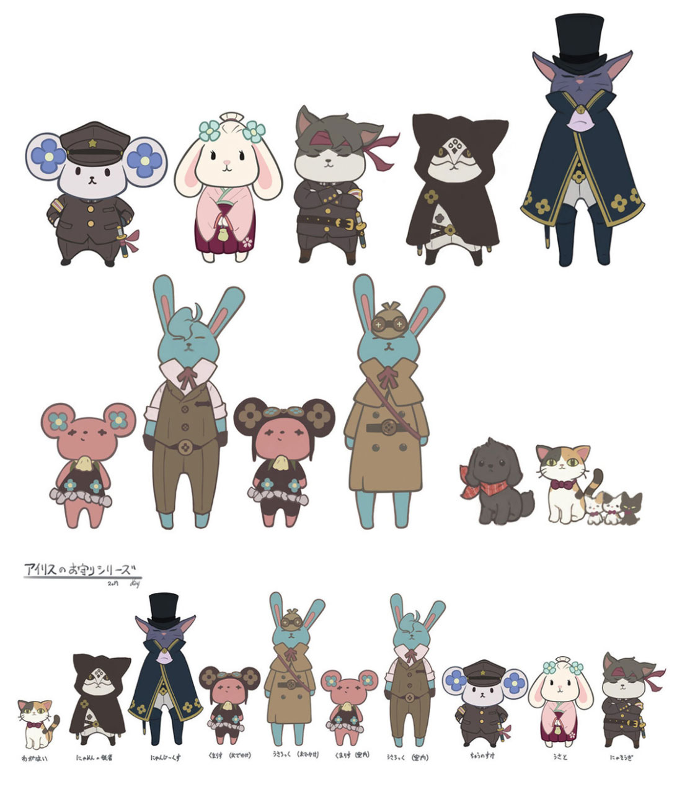

If you've played The Great Ace Attorney Chronicles, you may recognize the little bunny Holmes and bear Iris charms dangling from Iris's backpack in the game. I thought these were absolutely adorable and apparently so did the concept artists! I was absolutely thrilled to find that there was concept art of little animal versions of the entire main cast. I knew that I had to have them and so I quickly started planning and came up with plans to make them all into little felt doll keychains!

I won't get too deep into the details of each one, but here was the general process.I would start each doll by making the head. To do this, I zoomed in on the picture of the doll in question until it appeared the size I wanted it to be when I made it. Then, I traced the shape of the head and then traced approximately 3-4mm outwards to make the seam allowance. After cutting out that pattern, I traced it on the felt fabric, cut it out, and then sewed the two sides together using whip stitch. I preferred using whip stitch here because the project is so small. Making sure to leave an opening, I would flip the head inside out and then stuff it. Now we have the general head shape!
For details on the head, I would embroider the face of each doll(I am not a professional at embroidery and it was entirely my personal preference to do this part after sewing! You can totally do this first and then sew it if that’s easier for you!). Then I would glue together two pieces of felt fabric for the ears to reinforce it and then add the smaller details of the ears in felt too(things like the pink on the inside of Holmes and Susato’s ears or the clover pattern in Ryuu’s). Then I like to sew the ears onto the head using whip stitch again.
For the body, I do the same thing I did with the head but this time I take into account the actual size of the head once it’s been sewn and stuffed as well as the number of layers of clothes the body portion will have. For example, I could leave the same normal amount of seam allowance as I did on the head for Iris since her outfit is only one little layer. But for Susie, her kimono seemingly has two layers(light blue under the pink) and she has that magenta skirt as well. Because of this, I traced her body shape with no seam allowance since the clothes would add the extra bulk for the body to be proportionate with the head.
The clothes are so vastly different between all of these that I’m going to skip over that for now but I will definitely go into further detail if I get any requests to make tutorials for specific characters!
I typically include the legs with the shape of the body so that gets taken care of there but the arms are a different story. I actually quite enjoy making the arms because I’ve found a method that makes them look really great with no sewing, which makes it the easiest part for me! All I do is measure how long the arms are and then cut a strip of fabric that length and then roll it up while adding glue in between the layers. That’s it basically. When the arm looks like it's the right size, I cut off the excess and trim the ends around to make the little “hands” look rounder and less like a cylinder.
And that’s how the general process goes! I really enjoyed making these and I’m honestly thinking about making more and selling them if there’s a demand so let me know by contacting me! If you’re thinking of making this yourself, I’d also be happy to give more detailed guides on each character so let me know!
Personally, I found this project to be very rewarding but it was also pretty difficult to figure out how to make certain parts like the clothes. If I had to rank them in terms of difficulty, I’d say from easiest to hardest it goes: Iris > Susato > Van Zieks > Holmes > Ryunosuke. Runo’s little folded arms and his hat and the super tiny details on his uniform made him way more difficult than the rest. Meanwhile Iris’s design was cute and simple. If anyone was planning on making all of these, I’d recommend following that order so you can learn as you go and not get scared off by the difficulty level!
Next Post »